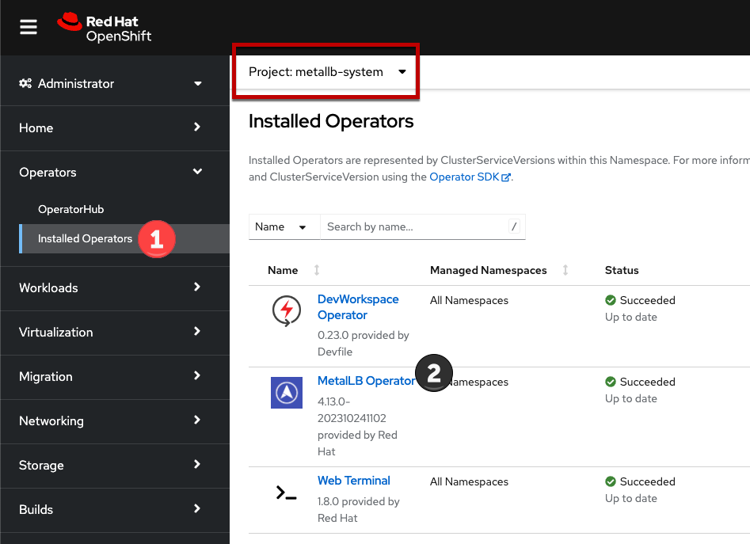
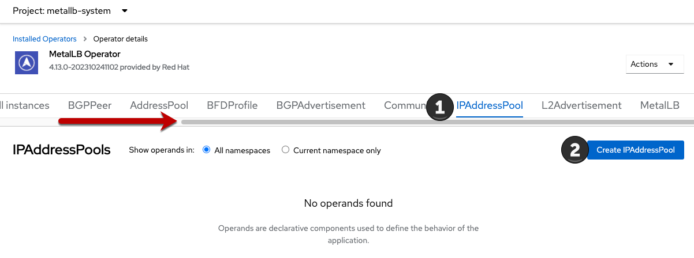
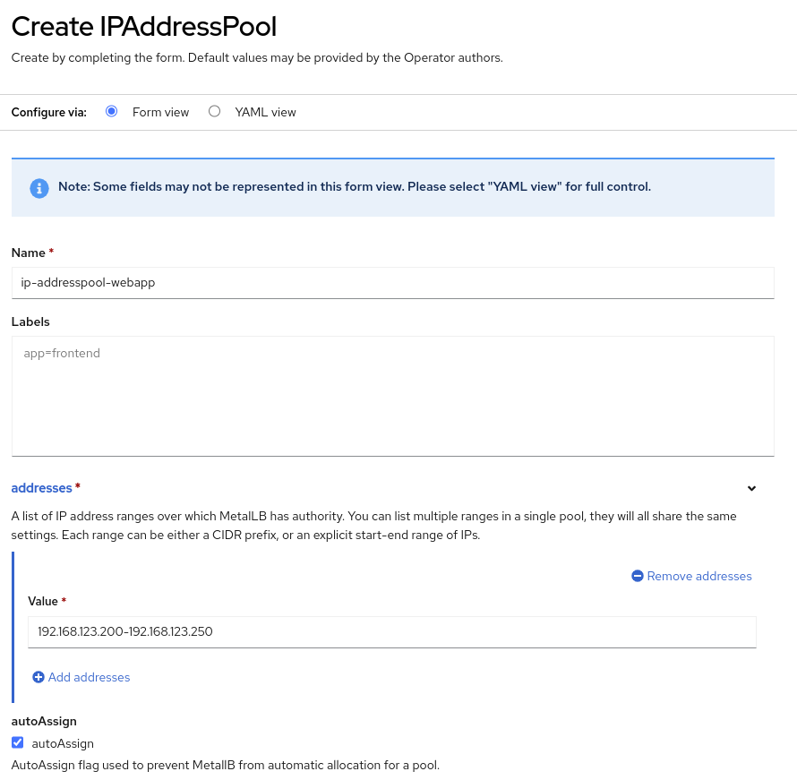
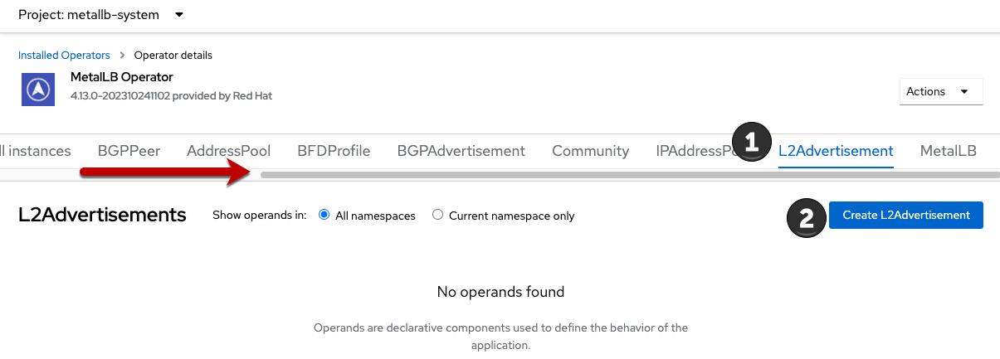
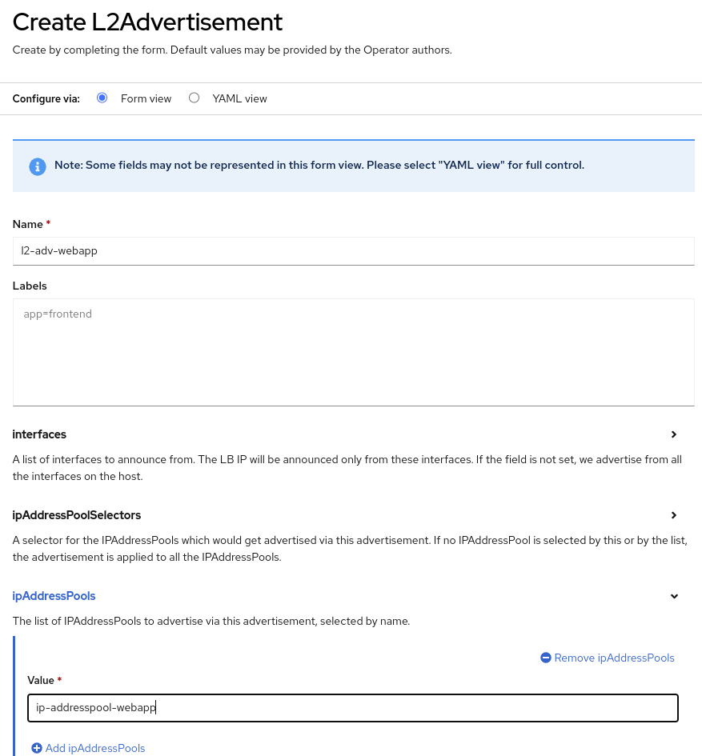
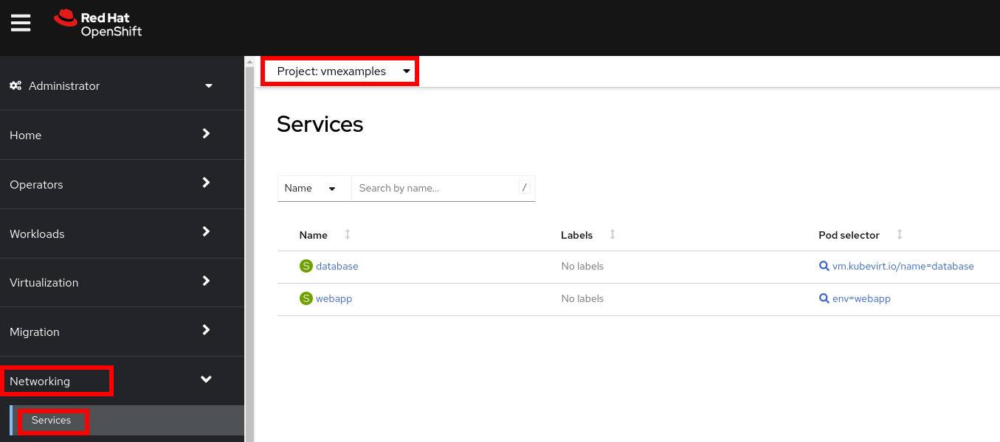
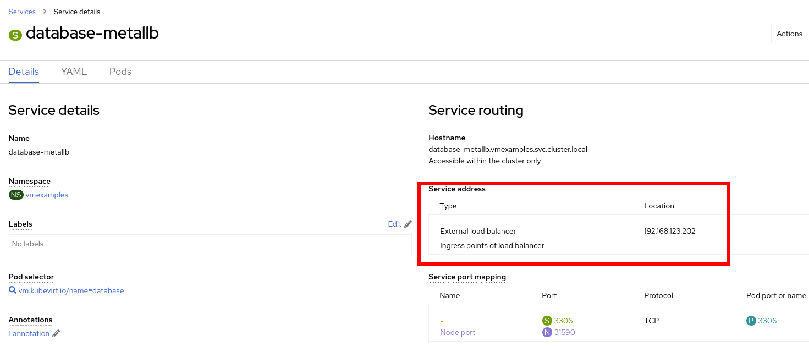

Optional: Exposing apps using MetalLB
In this lab, you will review the MetalLB operator and expose virtual machine hosted applications outside of the cluster.
1. MetalLB concepts
Using MetalLB is valuable when you have a bare-metal cluster or a virtual infrastructure that is treated like bare-metal, and you want to ensure fault-tolerant access to an application through an external IP address.
For MetalLB to meet this need, you must configure your networking infrastructure to ensure that the network traffic for the external IP address is routed from clients to the host network for the cluster.
It can operate in two modes:
-
MetalLB operating in layer2 mode provides support for failover by utilizing a mechanism similar to IP failover. However, instead of relying on the virtual router redundancy protocol (VRRP) and keepalived, MetalLB leverages a gossip-based protocol to identify instances of node failure. When a failure is detected, another node assumes the role of the leader node, and a gratuitous ARP message is dispatched to broadcast this change.
-
MetalLB operating in layer3 or border gateway protocol (BGP) mode delegates failure detection to the network. The BGP router or routers that the OpenShift Container Platform nodes have established a connection with will identify any node failure and terminate the routes to that node.
Using MetalLB instead of IP failover is preferable for ensuring high availability of pods and services.
1.1. Layer2 mode
In layer 2 mode, the speaker pod on one node announces the external IP address for a service to the host network. From a network perspective, the node appears to have multiple IP addresses assigned to a network interface.
In layer 2 mode, all traffic for a service IP address is routed through one node. After traffic enters the node, the service proxy for the CNI network provider distributes the traffic to all the pods for the service.
When a node becomes unavailable, failover is automatic. The speaker pods on the other nodes detect that a node is unavailable, and a new speaker pod on a surviving node will take ownership of the service IP address from the failed node.
1.2. Layer 3 (BGP) mode
In BGP mode, by default, each speaker pod advertises the load balancer IP address for a service to each BGP peer. It is also possible to advertise the IPs coming from a given pool to a specific set of peers by adding an optional list of BGP peers. BGP peers are commonly network routers that are configured to use the BGP protocol. When a router receives traffic for the load balancer IP address, the router picks one of the nodes with a speaker pod that advertised the IP address. The router sends the traffic to that node. After traffic enters the node, the service proxy for the CNI network plugin distributes the traffic to all the pods for the service.
If a node becomes unavailable, the router then initiates a new connection with another node that has a speaker pod that is advertising the load balancer IP address.

2. Define IP AddressPool
For this lab, we will use the same network where the OpenShift Cluster nodes are located (192.168.123.0/24) and for this exercise we will reserve the IP range 192.168.123.200-192.168.123.250 to be used for load balanced services in the OpenShift cluster.
-
In the left navigation menu, browse to Operators → Installed Operators, switch to project
metallb-system. Then choose the MetalLB Operator -
Switch the tab IPAddressPool (you may need to scroll the tabs to the right to see it) and press Create IPAddressPool
 -
Use the name
ip-addresspool-webappand under section addresses, remove any existing addresses and enter192.168.123.200-192.168.123.250as the address pool. When complete it should look similar to this image: -
Scroll down and press Create.
2.1. Configure Layer2 mode
For this lab we will use MetalLB in layer2 mode, so we need to create the configuration.
-
Switch to the L2Advertisement tab (you may need to scroll the tab list to the right to see it) and press Create L2Advertisement.
 -
Indicate the name
l2-adv-webappand under section ipaddressPools specify the valueip-addresspool-webappas is shown: -
Press Create
3. Expose the database node externally
If you completed the Exposing apps using a Route module, the VM is currently accessible from inside the cluster using the Service previously created. In this task, we will expose port 3306 outside of the cluster, making the database available to other virtual machines and consumers not hosted in OpenShift.
-
Navigate to Networking → Services and select the project
vmexamplesImportantIf you did not complete the module Migrating Virtual Machines you can use pre-existing virtual machines in the
vmimportedproject.If you are using the pre-imported virtual machines, please replace all instances of
vmexamplesnamespace withvmimported. -
Press Create Service and fill the form with the following code snippet:
apiVersion: v1 kind: Service metadata: name: database-metallb namespace: vmexamples spec: type: LoadBalancer selector: vm.kubevirt.io/name: database ports: - protocol: TCP port: 3306 targetPort: 3306NoteNotice the typeindicated isLoadBalancer. Since this cluster has MetalLB installed, it will result in the specified port(s) exposed using that. There are other load balancer options available from partners such as F5, Nginx, and more. -
Press Create and review the Service created. Notice the IP address assigned to the load balancer is from the range specified earlier in the lab.
 -
To verify connectivity to the database service via the external IP, open the web terminal by clicking the following icon in the right-top part.

-
A console in the bottom part of the screen appears

-
Using the right console, try to access the IP assigned and the port 3306
[~] $ curl -s 192.168.123.202:3306 | cut -c1-16
Sample Output5.5.68-MariaDB
4. Summary
MetalLB is a straightforward and simple solution for bare-metal, on-premises deployments to expose applications outside of the cluster, without the need to configure physical networks with NMstate or multus.